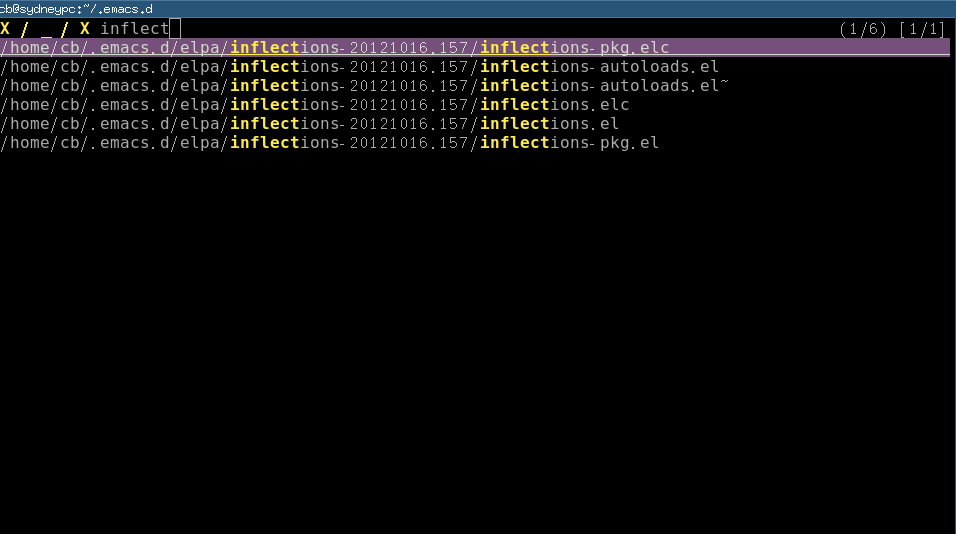
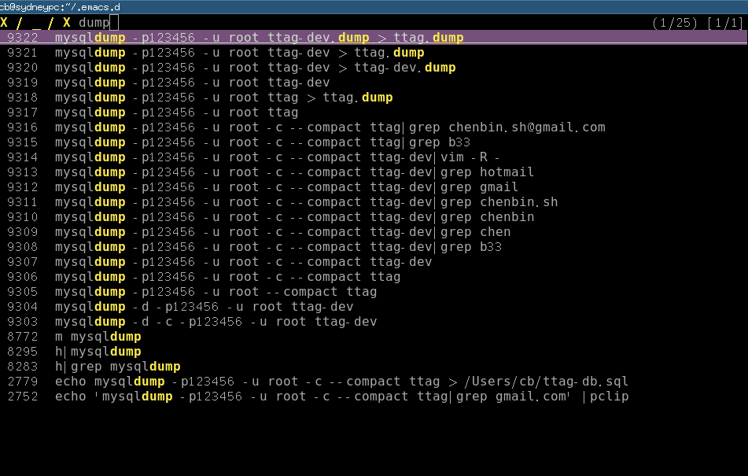
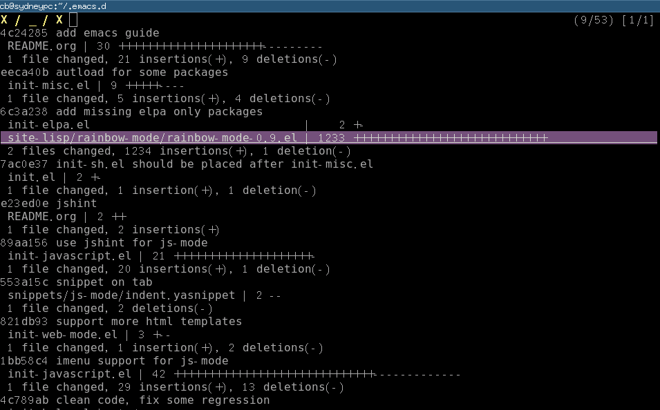

Export org file embedded with code snippets
CREATED:
UPDATED:
problem
I use Org-mode to record all my notes.
As a developer, I place code snippets from many programming languages into one org file.
The issue is when exporting the org file, major mode for each language will be loaded to render the code snippet.
It means the hooks of the major modes will be executed. Since I put lots of heavy weight setup things in those hooks, my exporting is extremely slow.
My hooks are also dependent on third party tools. So if anyone else uses my setup without those tools, his/her exporting will fail.
Solution
Setup
In order to solve the issue, I write a small function which will be called at the beginning of each major mode hook.
The function basically check whether the `(buffer-file-name)` is the temporary file created by Org-mode or the output HTML converted from org file. If answer is "YES", then code in major mode hook will not be executed.
(defvar load-user-customized-major-mode-hook t)
(defvar cached-normal-file-full-path nil)
(defun is-buffer-file-temp ()
(interactive)
"If (buffer-file-name) is nil or a temp file or HTML file converted from org file"
(let ((f (buffer-file-name))
org
(rlt t))
(cond
((not load-user-customized-major-mode-hook) t)
((not f)
;; file does not exist at all
(setq rlt t))
((string= f cached-normal-file-full-path)
(setq rlt nil))
((string-match (concat "^" temporary-file-directory) f)
;; file is create from temp directory
(setq rlt t))
((and (string-match "\.html$" f)
(file-exists-p (setq org (replace-regexp-in-string "\.html$" ".org" f))))
;; file is a html file exported from org-mode
(setq rlt t))
(t
;; avoid calling to file-exists-p too often for performance reason
(setq cached-normal-file-full-path f)
(setq rlt nil)))
rlt))
Usage
I use python-mode-hook setup as an example:
(add-hook 'python-mode-hook
'(lambda ()
(unless (is-buffer-file-temp)
(anaconda-mode)
(eldoc-mode)
(if (executable-find "pyflakes")
(flymake-python-pyflakes-load))
(setq electric-indent-chars (delq ?: electric-indent-chars))
)))
Tips
Export shell code
Exporting shell code will fail if `sh-mode` is loaded. So I use "bash" instead. Since there is no "bash-mode", exporting will be fine.
Yasnippet setup
To avoid loading yasnippets when exporting, I have to "use yas-minor-mode on a per-buffer basis".
Manually turn off the major-mode hook
It's controlled by global flag `load-user-customized-major-mode-hook`, as you can see from the "Setup" section.
Say I want to turn off the major mode hooks when `M-x org-publish`, here is the setup:
(defadvice org-publish (around org-publish-advice activate)
"Stop running major-mode hook when org-publish"
(let ((old load-user-customized-major-mode-hook))
(setq load-user-customized-major-mode-hook nil)
ad-do-it
(setq load-user-customized-major-mode-hook old)))
after-save-hook
`after-save-hook` is the "Normal hook that is run after a buffer is saved to its file". You may also need tweak it up because it will be called when exporting org files
How a programmer publish static HTML blog in Emacs
I can publish my blog in five seconds, running only one Emacs command!
I give you a minimum solution at first, then I explain why and provide technical details.
Basic Emacs lisp knowledges are required.
Please note I'm NOT targeted at specific static site generator like Nikola or Jekyll.
Solution
Tested on Linux and OSX.
Requirements:
- Org-mode bundled with Emacs 24.x
- Nikola as the blog generator
- FTP client ncftp
- Latest org2nikola (v0.0.9+)
- Insert below code into ~/.emacs
(defun org2nikola-after-hook-setup (title slug)
(let ((url (concat "http://blog.yourdomain.net/posts/" slug ".html"))
(nikola-dir (file-truename "~/projs/nikola-root"))
(password "yourpassowrd")
(username "yourusername")
dir
file
lines
rlt
res
cmd)
(kill-new title)
(kill-new url)
(message "%s => kill-ring" url)
(setq rlt (shell-command-to-string (format "cd %s; nikola build" nikola-dir)))
(setq lines (split-string rlt "\n"))
(dolist (l lines)
(when (string-match "output\\(.*/\\)*\\([^/]*\\)$" l)
(setq dir (match-string 1 l))
(setq file (match-string 2 l))
(setq cmd (format "ncftpput -b -u %s -p %s ftp.yourdomain.net /blog%s %s/output%s%s"
username password dir nikola-dir dir file))
(message "cmd=%s" cmd)
(shell-command cmd)
))
))
(add-hook 'org2nikola-after-hook 'org2nikola-after-hook-setup)
You can write blog into org file, export and publicize it with command `M-x org2nikola-export-subtree`.
Why
I used Wordpress and Org2blog for a very long time. Then I turned to static blog generator because:
- Wordpress is slow to load web page
- I waste too much time to "manage" Wordpress (applying security patch, fighting with spam comment …)
- As a programmer, I need publish code snippets. Wordpress is BAD at rendering code.
Yes, only wordpress sucks. For Org2blog, I can only say good things. Actually, this article is inspired purely by Puneeth Chaganti's excellent work on org2blog.
Technical Details
Generating HTML
As I said, Nikola is my blog generator which converts my org file into HTML.
But I prefer using Org-mode to do the HTML rendering. Nikola only need handle remaining minor book keeping stuff (creating RSS feed, for example).
It's because I want to minimize the dependency. I may switch to other blog generator in the future. But my web site always has the same look and feel because the HTML is generated by Org-mode.
I learned this trick from Org2blog.
If we only use org-mode to create HTML, then extracting code snippet is really easy. All we need is to use regular expression to extract the content between HTML tag "<pre>".
Actually I don't even bother doing the extraction. I just replace all the "<pre>" tag with my own tag because I assume the HTML produced by org-mode is stable.
Here is the Emacs lisp code I borrowed from Org2blog:
(defun org2nikola-replace-pre (html)
"Replace pre blocks with sourcecode shortcode blocks.
shamelessly copied from org2blog/wp-replace-pre()"
(save-excursion
(let (pos code lang info params header code-start code-end html-attrs pre-class)
(with-temp-buffer
(insert html)
(goto-char (point-min))
(save-match-data
(while (re-search-forward "<pre\\(.*?\\)>" nil t 1)
;; When the codeblock is a src_block
(unless
(save-match-data
(setq pre-class (match-string-no-properties 1))
(string-match "example" pre-class))
;; Replace the <pre...> text
(setq lang (replace-regexp-in-string ".*src-\\([a-zA-Z0-9]+\\).*" "\\1" pre-class) )
(replace-match "")
(setq code-start (point))
;; Go to end of code and remove </pre>
(re-search-forward "</pre.*?>" nil t 1)
(replace-match "")
(setq code-end (point))
(setq code (buffer-substring-no-properties code-start code-end))
;; Delete the code
(delete-region code-start code-end)
;; Stripping out all the code highlighting done by htmlize
(setq code (replace-regexp-in-string "<.*?>" "" code))
;; class linenums will add stripes which will destory the 3rd party skins
(insert (concat "\n<pre class=\"prettyprint lang-"
(org2nikola-fix-unsupported-language lang)
"\">\n"
code
"</pre>\n"))
)))
;; Get the new html!
(setq html (buffer-substring-no-properties (point-min) (point-max))))
))
html)
The code snippet inside "<pre>" tag could be rendered by 3rd party javascript library google-code-prettify or SyntaxHighlighter.
BTW, the last straw that push me away the Wordpress is its wrapper of SyntaxHighlighter. SyntaxHighlighter is a beautiful and user-friendly library. But the wrapper forces me to tweak the php code in terrible editor from Wordpress.
Create blog posts
Emacs creates HTML files and meta files. Things created by Emacs will be copied into Nikola's folder.
Nikola's duty is simple. Basically it only copy my stuff from its input folder to its output folder when I trigger "nikola build" command.
The "nikola build" command will also dump the list of files to be uploaded into stdout.
The build message dumped:
Scanning posts....done! . render_archive:output/2014/index.html . render_sources:output/posts/jump-to-the-positions-before-and-after-m-x-imenu.wp . render_posts:cache/posts/jump-to-the-positions-before-and-after-m-x-imenu.html . render_indexes:output/index.html . render_indexes:output/index-17.html . render_tags:output/categories/en.html . render_tags:output/categories/emacs.html . render_tags:output/assets/js/tag_cloud_data.json . render_tags:output/categories/emacs.xml . generate_rss:output/rss.xml . render_pages:output/posts/jump-to-the-positions-before-and-after-m-x-imenu.html . render_pages:output/posts/why-emacs-is-better-editor-part-two.html . render_tags:output/categories/en.xml
Only the files in sub-folder "output" need be uploaded.
Preprocess nikola output
It's all done by Emacs Lisp.
The final output contain lines like:
ncftpput -b -u yourname -p yourpassword ftp.yourdomain.net /blog/2014/ /home/yourname/nikola-root/output/2014/index.html
As you can see, each line is a ftp upload command we need execute in shell.
FTP upload
Ncftp is my choice of FTP client. It's solid and efficient.
Its command line tool "ncftpput" has a flag "-b". With the flag ncftpput will start a daemon at background and handles the ftp upload as a batch job submit. It means ftp connection will be reused and the user is not blocked by the upload operation. So the upload operation is extremely fast.
I use Emacs Lisp API `file-truename` to convert all relative path to absolute path to avoid any platform (OSX) issue.
BTW, you can `cat ~/.ncftp/spool/log` to check the FTP upload status.
Summary
The workflow is simple.
Emacs and third party JS libraries are responsible for the look and feel of my website.
Blog generator like Nikola is just a thin layer to relay the HTML files created by Emacs.
Ncftp will upload HTML files. It's the best FTP client which could be easily integrated into Emacs.
Jump to the positions before and after `M-x imenu`
As a programmer, I use `M-x imenu` to jump to the callee when editing a code file. After a little code tweaking in the callee, I need jump back to caller as quickly as possible.
Solution
Insert below code to ~/.emacs:
(defvar rimenu-position-pair nil "positions before and after imenu jump")
(add-hook 'imenu-after-jump-hook
(lambda ()
(let ((start-point (marker-position (car mark-ring)))
(end-point (point)))
(setq rimenu-position-pair (list start-point end-point)))))
(defun rimenu-jump ()
"jump to the closest before/after position of latest imenu jump"
(interactive)
(when rimenu-position-pair
(let ((p1 (car rimenu-position-pair))
(p2 (cadr rimenu-position-pair)))
;; jump to the far way point of the rimenu-position-pair
(if (< (abs (- (point) p1))
(abs (- (point) p2)))
(goto-char p2)
(goto-char p1))
)))
Now you can use `M-x rimenu-jump` to jump.
Technical details
Imenu will push the start point into mark-ring. After reaching the destination, it will call the imenu-after-jump-hook where I can store the end point.
I store the start/end point into rimenu-position-pair and `M-x rimenu-jump` goes to the farthest one from the pair.
Here is the original discussion on G+. Thanks to Jorge A. Alfaro Murillo for enlightening me on the solution.
Why Emacs is a better editor, part two
If you are impatient, jump to the "Quick Start" and paste my setup into your ~/.emacs. That's all you need to do!
No extra setup needed! Then keep using your js2-mode happily, as if nothing happened. ;)
Problem
In my previous article Why Emacs is better editor - a case study for javascript developer, I proved that Emacs is better than Sublime Text.
So for this so-called "Goto Symbol" feature, Emacs wins.
It's because we use a plugin js2-mode. It's actually a javascript parser which creates the symbols from AST.
But in real world, regular expression is better, sometimes.
In modern MVC javascript frameworks (Angular, for example), you will meet below code,
app.controller('MyController', function ($scope, $http) {
// ...
});
As you can see, using regular expression to extract the string "MyController" is more versatile and simpler.
Solution
My latest contribution to js2-mode solves this problem perfectly. It combines the powers of AST and regular expression.
The js2-mode will integrate this feature soon. I will notify you when next version is ready.
Let's cut off the boring technical details and see the demo,
For a simple hello.js with below content,
function helloworld() {
console.log('hello called');
}
function test() {
console.log('test called');
}
app.controller('MyController', function ($scope, $http) {
console.log('MyController registered');
var that = this;
$scope.test1 = function() {
console.log('$scope.test called');
};
$scope.hello = function() {
console.log('$scope.hello called');
};
$scope.fn1 = function () {
function test() {
console.log('hello world');
};
console.log('hello');
};
});
Emacs:

Sublime3 (build 3047):

Please note Emacs displays two functions with the same name "test" correctly!
BTW, my previous "Why Emacs is better" article got many feedbacks from Sublime users.
One feedback is that my comparison is not fair because I'm comparing Emacs plugin with naked Sublime. Though I did some research before writing the article, I could be wrong. Please enlighten me if you know such Sublime plugins.
Another valuable feedback is that native Sublime provides better experience out of the box for junior developers. I admit that's a good point. But Emacs provides many awesome choices out of the box if junior guys start from setups of the masters (like Steven Purcell).
Sublime users also argue that Sublime3 uses Python. Python is a better programming language. I'm qualified to answer this question because I wrote some large commercial Python application when I worked in Kodak R&D. First version I used was v2.2. So I've got about 10 years experience in Python. And I write lots of Emacs Lisp code these days. My opinion is that both languages are good enough as DSL for text editors. In Python, you can use OO. In Emacs Lisp, you can treat function as object and there are Macros and Advising. Both languages have enough widgets to shoot yourself in the foot. Python is surely newbie-friendly. But number of newbies doesn't matter in high-end rival.
Quick Start
I'm still discussing with the js2-mode maintainer Dmitry Gutov about the best way to merge my patch.
Dmitry Gutov updated the algorithm to parse the imenu items by walking the AST instead. It's better than my REGEX hacking because AST could show the context of the function.
But my patch is still useful for extract strings from modern JS framework, as I've shown you in Angular example. I'm just updating my pull request to be compatible with the new AST walk algorithm.
In the meantime, you can paste below code into your ~/.emacs before the patch is officially merged.
;; below regex list could be used in both js-mode and js2-mode
(setq javascript-common-imenu-regex-list
'(("Controller" "\.controller( *'\\([^']+\\)" 1)
("Filter" "\.filter( *'\\([^']+\\)" 1)
("Factory" "\.factory( *'\\([^']+\\)" 1)
("Service" "\.service( *'\\([^']+\\)" 1)
("Directive" "\.directive( *'\\([^']+\\)" 1)
("Event" "\.\$on( *'\\([^']+\\)" 1)
("Config" "\.config( *function *( *\\([^\)]+\\)" 1)
("Config" "\.config( *\\[ *'\\([^']+\\)" 1)
("OnChange" " *\$('\\([^']*\\)').*\.change *( *function" 1)
("OnClick" " *\$('\\([^']*\\)').*\.click *( *function" 1)
("Watch" "\.\$watch( *'\\([^']+\\)" 1)
("Function" "function\\s-+\\([^ ]+\\)(" 1)
("Function" " \\([^ ]+\\)\\s-*=\\s-*function\\s-*(" 1)))
;; {{ patching imenu in js2-mode
(setq js2-imenu-extra-generic-expression javascript-common-imenu-regex-list)
(defvar js2-imenu-original-item-lines nil
"List of line infomration of original imenu items.")
(defun js2-imenu--get-line-start-end (pos)
(let (b e)
(save-excursion
(goto-char pos)
(setq b (line-beginning-position))
(setq e (line-end-position)))
(list b e)))
(defun js2-imenu--get-pos (item)
(let (val)
(cond
((integerp item)
(setq val item))
((markerp item)
(setq val (marker-position item))))
val))
(defun js2-imenu--get-extra-item-pos (item)
(let (val)
(cond
((integerp item)
(setq val item))
((markerp item)
(setq val (marker-position item)))
;; plist
((and (listp item) (listp (cdr item)))
(setq val (js2-imenu--get-extra-item-pos (cadr item))))
;; alist
((and (listp item) (not (listp (cdr item))))
(setq val (js2-imenu--get-extra-item-pos (cdr item)))))
val))
(defun js2-imenu--extract-line-info (item)
"Recursively parse the original imenu items created by js2-mode.
The line numbers of items will be extracted."
(let (val)
(if item
(cond
;; Marker or line number
((setq val (js2-imenu--get-pos item))
(push (js2-imenu--get-line-start-end val)
js2-imenu-original-item-lines))
;; The item is Alist, example: (hello . 163)
((and (listp item) (not (listp (cdr item))))
(setq val (js2-imenu--get-pos (cdr item)))
(if val (push (js2-imenu--get-line-start-end val)
js2-imenu-original-item-lines)))
;; The item is a Plist
((and (listp item) (listp (cdr item)))
(js2-imenu--extract-line-info (cadr item))
(js2-imenu--extract-line-info (cdr item)))
;;Error handling
(t (message "Impossible to here! item=%s" item)
)))
))
(defun js2-imenu--item-exist (pos lines)
"Try to detect does POS belong to some LINE"
(let (rlt)
(dolist (line lines)
(if (and (< pos (cadr line)) (>= pos (car line)))
(setq rlt t)))
rlt))
(defun js2-imenu--is-item-already-created (item)
(unless (js2-imenu--item-exist
(js2-imenu--get-extra-item-pos item)
js2-imenu-original-item-lines)
item))
(defun js2-imenu--check-single-item (r)
(cond
((and (listp (cdr r)))
(let (new-types)
(setq new-types
(delq nil (mapcar 'js2-imenu--is-item-already-created (cdr r))))
(if new-types (setcdr r (delq nil new-types))
(setq r nil))))
(t (if (js2-imenu--item-exist (js2-imenu--get-extra-item-pos r)
js2-imenu-original-item-lines)
(setq r nil))))
r)
(defun js2-imenu--remove-duplicate-items (extra-rlt)
(delq nil (mapcar 'js2-imenu--check-single-item extra-rlt)))
(defun js2-imenu--merge-imenu-items (rlt extra-rlt)
"RLT contains imenu items created from AST.
EXTRA-RLT contains items parsed with simple regex.
Merge RLT and EXTRA-RLT, items in RLT has *higher* priority."
;; Clear the lines.
(set (make-variable-buffer-local 'js2-imenu-original-item-lines) nil)
;; Analyze the original imenu items created from AST,
;; I only care about line number.
(dolist (item rlt)
(js2-imenu--extract-line-info item))
;; @see https://gist.github.com/redguardtoo/558ea0133daa72010b73#file-hello-js
;; EXTRA-RLT sample:
;; ((function ("hello" . #<marker 63>) ("bye" . #<marker 128>))
;; (controller ("MyController" . #<marker 128))
;; (hellworld . #<marker 161>))
(setq extra-rlt (js2-imenu--remove-duplicate-items extra-rlt))
(append rlt extra-rlt))
(with-eval-after-load 'js2-mode
(defadvice js2-mode-create-imenu-index (around my-js2-mode-create-imenu-index activate)
(let (extra-rlt)
ad-do-it
(setq extra-rlt
(save-excursion
(imenu--generic-function js2-imenu-extra-generic-expression)))
(setq ad-return-value (js2-imenu--merge-imenu-items ad-return-value extra-rlt))
ad-return-value)))
;; }}
My Emacs skill is improved after 3 years
This is my note on useful commands/keybindings to memorize three years ago.
Most are obsolete because I'm more skillful now.
Basically I use fewer but more powerful plugins. I write Emacs lisp if there is no suitable plugin.
- Three years ago, column edit,
C-x r t yourstring RET (See "How to do select column then do editing in GNU Emacs ?"")
Now I use Evil
- Three years ago, save current position to register and jump to the position,
C-r SPC to save, C-j to jump (better-registers.el required)
Now Evil.
- Three years ago, save frame configuration to register,
C-r f (better-registers.el required)
Now workgroups2.
- Three year ago, (un)comment line,
M-; (qiang-comment-dwim-line required)
- Three years ago for visiting the next/previous error message after compiling,
"M-g M-n" or "M-g M-p"
I'm still using it.
- Three years ago, find-tag/pop-tag-mark
"M-." and "M-*"
Now Evil
- Three years ago, grep current work directory only or all sub-directories
M-x lgrep/rgrep
Now grep in shell plus percol
- Three years ago, visit multiple tags table
M-x visit-tags-table
hack tags-table-list directly might be simpler.
- Three years ago, set countdown timer
M-x org-timer-set-timer, C-c C-x ;
Now I don't push myself with the timer thing.
- Three years ago, mark subtree in org-mode
M-x org-mark-subtree
It was used to select the text to post to my blog.
Now I use org2nikola. The org-mark-subtree is hardcoded into org2nikola.
How to accept the github pull request efficiently
I use keyboard only in order to maximize my productivity.
Preparation
Step 1
Open pull request page at github.com, click the link "command line".
In a real world project, I rarely accept a pull request without some modification. So I usually avoid pressing the big green button "merge pull request" on that page.
In the "command line" page, github is kind enough to list the command lines to "check out a new branch and test the changes" from the pull request. The command lines are like:
git checkout -b her-master master
git pull git@github.com:her/myproject.git master
I have installed a Greasemonkey user script NinjaWebCoder in order to use keyboard to copy those command lines from the browser into clipboard. Then I paste the command lines into terminal.
Step 2
I open the code file with Emacs.
There is an Emacs addon called git-gutter. I use its command "git-gutter:next-hunk" to move the cursor to the next "diff hunk".
Let me explain what's the diff hunk. When you edit some code under git's control, you code has some difference with the HEAD version. Every difference corresponds to the pair of a file name and a line number. That file-name-line-number pair is defined as a "diff hunk".
Now comes the most important part of this article. Since version 0.71, git-gutter added a new command "git-gutter:set-start-version". If I "git-gutter:set-start-revision" to the "HEAD^" version. I can jump to "diff hunk" of the difference between "HEAD" and "HEAD^".
In short, I can review the latest commit and change the code in one step.
Done
After review and code change, the remaining book-keeping things (git-commit/git-merge/git-push) are easy.
Every operation in previous steps is optimized with some shortcut. For example, in shell I use alias "g" instead of full command line "git status".
Please enlighten me if the work flow could be improved.
How to do the file navigation efficiently
CREATED:
UPDATED:
The solutin is based on the ideas of top geeks. I only did the implementation.
Mendel Cooper provided the original design in Advanced Bash-Scripting Guide. Masafumi Oyamada (AKA mooz) added the missing piece by creating percol.
Problem
How to find full path of a file by fuzz search?
The path should be shared easily to other application like Emacs.
Installation
Step 1, Install percol
Download the package and extract it. Place the sub-directory named "percol/" into the directory "~/bin". Rename the program "percol" in sub-directory "bin" into "percol.py". Put the percol.py also into "~/bin".
Step 2, Insert below code into ~/.bashrc:
[ $(uname -s | grep -c CYGWIN) -eq 1 ] && OS_NAME="CYGWIN" || OS_NAME=`uname -s`
function pclip() {
if [ $OS_NAME == CYGWIN ]; then
putclip $@;
elif [ $OS_NAME == Darwin ]; then
pbcopy $@;
else
if [ -x /usr/bin/xsel ]; then
xsel -ib $@;
else
if [ -x /usr/bin/xclip ]; then
xclip -selection c $@;
else
echo "Neither xsel or xclip is installed!"
fi
fi
fi
}
# search the file and pop up dialog, then put the full path in clipboard
function baseff()
{
local fullpath=$*
local filename=${fullpath##*/} # remove "/" from the beginning
filename=${filename##*./} # remove ".../" from the beginning
# Only the filename without path is needed
# filename should be reasonable
local cli=`find . -not -iwholename '*/vendor/*' -not -iwholename '*/bower_components/*' -not -iwholename '*/node_modules/*' -not -iwholename '*/target/*' -not -iwholename '*.svn*' -not -iwholename '*.git*' -not -iwholename '*.sass-cache*' -not -iwholename '*.hg*' -type f -path '*'${filename}'*' -print | ~/bin/percol.py`
# convert relative path to full path
echo $(cd $(dirname $cli); pwd)/$(basename $cli)
}
function ff()
{
local cli=`baseff $*`
#echo ${cli} | sed 's%^'${HOME}'%~%'
#echo -n ${cli} | sed 's%^'${HOME}'%~%' | pclip
echo ${cli}
echo -n ${cli} | pclip
}
function cf()
{
local cli=`baseff $*`
local p=`cygpath -w $cli`
echo ${p}
echo -n ${p} | pclip;
}
`cf` is similar to `ff`. It will output Windows path under cygwin.
Usage
Type "ff partials-of-file-path" in shell. A filter window popups. You can filter and scroll down/up to select one file. The full path will be copied into system clipboard automatically (under Linux, either xsel or xclip are required for clipboard access).
The paritials-of-file-path could contain wildcard character.
For example, for "/home/cb/projs/web-portal/app/styles/bootstrap/main.css", you can type either of below command:
ff .../grunt-docs/*bootstrap*css
ff web-port*ma*css
ff styles
Here is the screen shot when I type "ff el" in my ~/.emacs.d: 
You will notice that I input the string "inflect" to filter the result.
I can scroll up/down (press Ctrl-P or Ctrl-N) to select the exact file.
In Emacs community, people try to embed a file explorer into Emacs (Sr speedbar, for example). This solution may make embedded file explorer unnecessary.
Advanced usage
More examples follow.
Search the bash history.
Code to insert ~/.bashrc:
function h () {
# reverse history, pick up one line, remove new line characters and put it into clipboard
if [ -z "$1" ]; then
history | sed '1!G;h;$!d' | ~/bin/percol.py | sed -n 's/^ *[0-9][0-9]* *\(.*\)$/\1/p'| tr -d '\n' | pclip
else
history | grep "$1" | sed '1!G;h;$!d' | ~/bin/percol.py | sed -n 's/^ *[0-9][0-9]* *\(.*\)$/\1/p'| tr -d '\n' | pclip
fi
}
Though grep is quick enough for me, it can be replaced by Silver Searcher.
Screenshot: 
Select a file in git commit
Code to insert ~/.bashrc:
function glsf () {
local str=`git --no-pager log --oneline --stat $* | ~/bin/percol.py`
if [[ $str =~ ^[[:space:]]*([a-z0-9A-Z_.\/-]*).*$ ]]; then
echo -n ${BASH_REMATCH[1]} |pclip;
echo ${BASH_REMATCH[1]}
fi
}
Screenshot: 
Summary
The key idea is that I have full freedom to get job done in any way. Emacs is nothing more than a tool to help me achieve more power and more freedom. For example, I find mooz's percol because I like his Emacs plugin js2-mode and I want to check his other works.
Install multiple versions of Emacs into $HOME directory from source
CREATED:
UPDATED:
Here is the script install-emacs.sh,
#!/bin/bash
[ -z "$EMACS_VERSION" ] && echo "Usage: EMACS_VERSION=24.3 install-emacs.sh" && exit 1
[ -z "$EMACS_URL" ] && EMACS_URL="http://mirror.aarnet.edu.au/pub/gnu/emacs/"
# I've assign 12G memory to /tmp as ramdisk
[ -z "$EMACS_TMP" ] && EMACS_TMP="/tmp"
# configure: WARNING: unrecognized options: --without-gtk3, --without-aqua, --without-alsa, --without-aqua
echo "curl $EMACS_URL/emacs-$EMACS_VERSION.tar.gz"
curl $EMACS_URL/emacs-$EMACS_VERSION.tar.gz | tar xvz -C $EMACS_TMP
# @see http://wiki.gentoo.org/wiki/Project:Emacs/GNU_Emacs_developer_guide
# @see http://packages.gentoo.org/package/app-editors/emacs for info on Gentoo Linux
# --without-gtk and --without-gtk3 is optional
if [[ $EUID -ne 0 ]]; then
echo "Installing Emacs as normal user ..."
cd $EMACS_TMP/emacs-$EMACS_VERSION;mkdir -p $HOME/myemacs/$EMACS_VERSION;rm -rf $HOME/myemacs/$EMACS_VERSION/*;./configure --prefix=$HOME/myemacs/$EMACS_VERSION --without-x --without-dbus --without-sound && make && make install
rm -rf $EMACS_TMP/emacs-$EMACS_VERSION
echo "Emacs $EMACS_VERSION installed!"
else
echo "Installing Emacs as sudoer ..."
cd $EMACS_TMP/emacs-$EMACS_VERSION;./configure --without-x --without-dbus --without-sound && make && make install
echo "Emacs $EMACS_VERSION installed! Please remove $EMACS_TMP/emacs-$EMACS_VERSION"
fi
Usage of the script is as simple as running EMACS_VERSION=24.3 ./install-emacs
The emacs will be installed into the directory ~/myemacs/24.3.
How to manage the file path in big project
It's not good practice to use relative path in big project.
Reasons:
- If file B refer to file A with "../A". Then B's position in the project *CANNOT be changed. Or else its reference to A will be wrong.
- Relative path is not intuitive when debugging.
- If the dependency is complex. Figure out the right path is mission impossible. For example, file A refer to file B with "./a/../../B" and file B refer to file C "../../b/C".
So you should ALWAYS use the absolute path.
Absolute path is tedious to type and not portable.
It could be improved a little bit be use an environment variable to replace the common prefix of the full path.
For example, we can replace absolute path "/home/cb/projects/app1/src/test.c" with "$TTAGROOT/src/test.c", if the value of environment variable TTAGROOT is "/home/cb/projects/app1".
Insert below code into ~/.bashrc so TTAGROOT value is set when you logged into bash:
export TTAGROOT="/home/cb/projects/app1"
In you script to do the real job, you could make TTAGROOT optional and still use your full path happily. It's just one bash liner.
Here is a sample file named test.sh:
#!/bin/bash
[ -z "$TTAGROOT" ] && TTAGROOT="hard-coded-full-path"
echo "TTAGROOT = $TTAGROOT"
You could use test.sh without $TTAGROOT. Or you can set up default value of $TTAGROOT in ~/.bashrc as I already mentioned.
Or you can override the TTAGROOT value when you executing "test.sh":
TTAGROOT="hello" ./test.sh
BTW, don't abuse this technique. Set one environment variable for the root directory of project is enough.
C/C++/Java code indentation in Emacs
Problem
There are two styles when insert curly braces in C like languages.
Style 1:
if(true) {
printf("hello world\n");
}
Style 2:
if(true)
{
printf("hello world\n");
}
Whatever style I use, I expect Emacs will properly handle the indentation for me.
In "Style 1", when I press ENTER key after "{" at first line, I expect the new line will indent four spaces.
In "Style 2", when I press ENTER key after ")" at first line, I expect the new line will NOT indent.
Solution
Insert below code into ~/.emacs:
(defun fix-c-indent-offset-according-to-syntax-context (key val)
;; remove the old element
(setq c-offsets-alist (delq (assoc key c-offsets-alist) c-offsets-alist))
;; new value
(add-to-list 'c-offsets-alist '(key . val)))
(add-hook 'c-mode-common-hook
(lambda ()
(when (derived-mode-p 'c-mode 'c++-mode 'java-mode)
;; indent
(fix-c-indent-offset-according-to-syntax-context 'substatement 0)
(fix-c-indent-offset-according-to-syntax-context 'func-decl-cont 0))
))
That's it.
Explanation
When you press the ENTER key, the function c-indent-line will be called.
That function will do some simple syntax analysis and decide current syntactic context..
It will use that syntactic context to look up a global variable c-offsets-alist and decide how many spaces the new line will indent.
For example, the context substatement corresponds to the code like below:
if(true) // press ENTER here
And the context func-decl-cont corresponds to:
void fn () //press ENTER here
Technical details
When you press ENTER key, the new line will be inserted. Then the function indent-according-to-mode will always be called
indent-according-to-mode will call function object indent-line-function if it's not nil.
In C/C++/Java, that object is actually c-indent-line.
c-indent-line is defined in /usr/share/emacs/24.3/lisp/progmodes/cc-cmds.el (I use Emacs 24.3 on Gentoo Linux).
In that function, just below the code line:
(setq c-syntactic-context (c-guess-basic-syntax))
You can insert log code as below:
(message "c-syntactic-context=%s" c-syntactic-context)
You will know the current syntactic context when you press ENTER key through the output of log code.
EmacsWiki says you can run command "c-set-offset", whose hot key is "C-x C-o", in order to "see the syntax at point". As I tested, it does not work as expected. My way may seem a little bit intrusive but is reliable.
For example, the context statement-cont corresponds to the use case like this:
int a=3, // press ENTER here
Please note syntax analysis in c-indent-line is turned on if and only if the global flag c-syntactic-indentation is true.
Thanks for chengyi for reporting the issue and suggesting the fix.
BTW, EmacsWiki has a section to discuss the indenting in C. You may not need it if you have read this article and can read the Emacs lisp code.